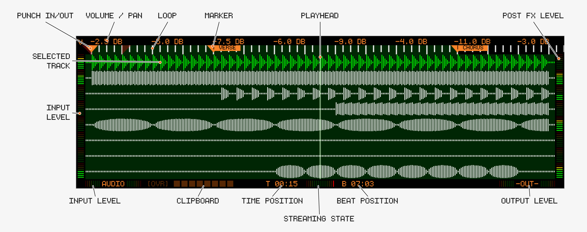
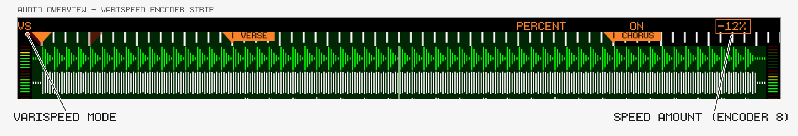
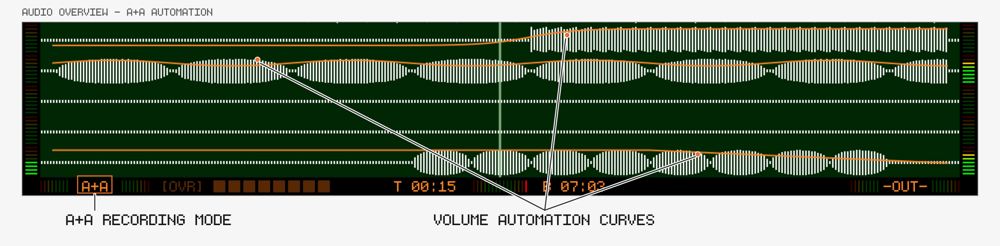
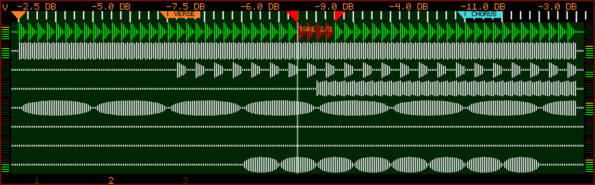

Overview
Track8 is built around a tape-style linear workflow with:
- 8 audio tracks
- destructive editing (with multiple undo and 1 redo step)
- real-time FX and automation
🖥 Audio Overview Screen

Controls
🎛 Track Encoders
- Press any encoder to cycle through the encoder modes:
- VOLUME → level (per track)
- PAN → stereo position (per track)
- SCROLL → timeline navigation (Encoder 1 sets the scroll increment, Encoder 8 scrolls)
- REC OFFSET → per-track record offset, 0 to -50 ms (since v1.1.4)
- RETURN MIX / RETURN VOL → return signal balance and level (external soundcards only)
- VARISPEED → tape speed (since v1.1.5)
- Hold

- Encoder 1 → Volume, 2 → Pan, 3 → Scroll, 4 → Rec Offset, 5 → Return Mix, 6 → Return Vol, 7 → Varispeed
- Hold
🔘 Track Buttons
- Select active track
Track Button→ Mute / Unmute
Track Button→ Solo / Un-solo (since v1.1.2)- Solo tracks are rendered in orange, all other tracks in their muted state
- Solo ignores the Mute state; toggling any Mute exits solo mode

Track Button→ select the same track for both Audio and MIDI (since v1.1.3)
🖥 Related Screens
- Press
🎚 Varispeed (since v1.1.5)
Change the tape speed for playback and recording:
- Switch any encoder to VARISPEED mode (
- Encoder 6: switch the display between Percent and Semitones
- Encoder 7: enable / disable Varispeed (disabling resets the speed)
- Encoder 8: adjust the amount
- Percent: -100 % (half speed) to +100 % (double speed)
- Semitones: -12 ST to +12 ST
Limitations:
- Recording with Varispeed is limited to one track — it is disabled when an external audio interface has more than one track armed
- The speed can’t be changed while a recording is running
- Playback audio is degraded; recorded audio is resampled at a higher quality

🎙 Recording Modes (since v1.1.2)
Touch the stereo input meter to cycle between three recording modes:
AUDIO: Default. Records audio only, no automationA+A: Records audio and live automationATM: Records automation only, no audio
In A+A and ATM mode the overview draws automation lines for the currently selected encoder mode (Volume, Pan, Return Mix, Return Vol). While recording is running, turning a track’s encoder writes its moves into that track’s automation lane.
- In
ATMmode every track records — turning any track’s encoder writes into its lane, no track selection or arming needed; inA+Amode automation is only written for the tracks being recorded (new in v1.2.1-SNAPSHOT) - A recorded automation pass undoes as a single step, however many tracks and parameters were ridden (new in v1.2.1-SNAPSHOT)
- The Track Mixer can arm an automation pass directly: pressing
ATMautomatically (new in v1.2.1-SNAPSHOT)

Recording behavior:
- Recording keeps running when switching views (except Settings / USB Browser)
- A running recording is indicated by a red border around the screen edges; actions that would silently stop it show an error instead (new in v1.2.1-SNAPSHOT)
- Touch the overdub indicator to quickly toggle Overdub (since v1.1.4)
🎬 Multi-Take Recording (new in v1.2.1-SNAPSHOT, preview)
Record multiple takes of the same section and pick the best one:
- Set a Punch In region (best inside a Loop region so the playhead cycles automatically)
- Start playback — each pass through the punch region records a take; the take row appears at the bottom
- Stop and press a
Track Buttonto audition a take (you can also switch takes during playback) - To commit, select the take and exit Punch (

- Pressing
Notes:
- Works for non-Overdub audio recordings only
- Up to 8 takes; take 9 overwrites take 1
Track Buttonstill mutes,Track Buttonstill solos during a take session

📊 Meters & Indicators
The level meters read peak in 8 bars of 6 dB each, counted from the red end of the scale. Quieter bars stay lit as the level rises, so the last lit bar is the reading. The per-track meters run bottom-to-top; the stereo -IN- and -OUT- meters run outwards from their label:
| Bar | Color | Lights from |
|---|---|---|
| 1 (red end) | 🔴 Red | -3 dBFS and above |
| 2 | 🟠 Orange | -3 to -9 dBFS |
| 3 | 🟡 Yellow | -9 to -15 dBFS |
| 4 | 🟢 Yellow-green | -15 to -21 dBFS |
| 5-8 (quiet end) | 🟢 Green | -21 to -48 dBFS |
Below -48 dBFS no bar lights.
Input Level
- Shows incoming signal of selected track
- ⚠️ Avoid red → clipping
- Touch to cycle the recording mode (see above)
Post FX Level
- Shows signal after:
- Filter
- Compressor
Output Level
- Final mix after Master FX
- ⚠️ This is your final headroom check
Clipboard Indicator
- Shows which track content was copied from
- Touch it to open the Audio Clipboard Modifier (since v1.1.3)
⏱ Timeline Indicators
- Time Position
- Beat Position
- Loop / Punch markers
- Streaming state
- SSD usage
Markers
- Markers can be given textual labels (e.g. “Verse”, “Chorus”)
- Markers snap to 1/4 notes — use the Audio Edit view for finer cut/copy/paste work (since v1.1.4)
- Touch marker to edit label
- In the marker edit screen you can:
- Lock / Unlock marker - Locked markers are shown with an
*and are protected from deletion with clear all Markers (
- Change BPM and Time Signature at the marker position (since v1.1.3)
- Applies to all content after the marker, or until the next marker with a tempo change
- Also affects existing MIDI notes, MIDI Clock and the Metronome
- Markers that change the tempo are always considered locked
- Send MIDI events to external gear when the playhead crosses the
marker (new in v1.2.1-SNAPSHOT):
- Encoder 4 picks what Encoders 5/6 edit:
-(no MIDI event — turning back to-clears it),TRANSorPROG. A marker sends one or the other — setting one clears the other TRANS— Encoder 5:---/START/STOP. Sends MIDI Start or Stop at the marker, e.g. to kick a drum machine’s pattern in at the chorus or stop an external sequencer for a breakdown. Only while Track8 is MIDI Clock Master; independent of theTRANSPORTsend setting. WithCLOCKon, the message is aligned to the next clock tick like Track8’s own transportPROG— Encoder 5: channel (CH 1…16, starts on the selected MIDI track’s channel), Encoder 6:PROG 1…128(turn below1→---removes the program change); push Encoder 6 to switch Encoder 6 toBANK 1…128(Bank Select MSB). One event per marker; use two markers for two devices or for a program change plus a transport command- Program changes are caught up: on play start, locate and loop wrap the latest program change at or before the playhead is re-sent per channel, so a synth is in the right patch when you start mid-song. Transport events fire only when the marker is actually crossed
- Markers with MIDI events show an
Mon the marker head
- Encoder 4 picks what Encoders 5/6 edit:
- Colour-code the marker with Encoder 7 (
COLOR) — turn to cycle through the regular marker colour plus red, yellow, green, cyan, blue, purple, pink and white; push to go back to the regular colour. TheCOLORlabel is drawn in the selected colour as a preview. The marker head, its label background and its marker leg all follow, which makes sections easy to tell apart when scrolling a long project (new in v1.2.1-SNAPSHOT)
- Lock / Unlock marker - Locked markers are shown with an
UTILITY→MKR LEGdraws a vertical line under each marker for easier visual reference (since v1.1.4)- Press
📦 Clipboard System
- Cut/Copy/Paste (


- Hold
- Only unmuted tracks are included in Cut/Copy All Operations (
- The Clipboard is kept in Memory, and will be cleared when shutting down the device
- Touch the clipboard indicator to open the Audio Clipboard Modifier and process the clipboard content
Arrange Audio and MIDI together
Hold 


- Both domains share the playhead and the Markers, so both use the same region
- Like
- Paste puts every copied track back on its own track — also when only a single track was copied. There is no bouncing here: the multi-track clipboard keeps its layout on both sides
- Paste replaces the destination on both sides for the length of the pasted audio: the audio is overwritten and the MIDI events in that span are cleared before the clipboard is written, so nothing of the old section bleeds into the new one
- Both clipboards are used, so the chord replaces whatever was in them
- The chord works on the Audio Overview and the MIDI Overview — it does the same thing from either side
- Keep the two buttons held to chain operations: Copy, move the playhead, Paste, all in one grip
- One Undo reverts both halves. After a chord Cut or Paste, a plain Undo (
Record) takes the audio and the MIDI side back, from either screen, and showsUNDO Audio + MIDI. Redo (- This holds as long as the chord edit is the newest thing on both sides. Edit one domain on its own afterwards and Undo stays per-domain: on that domain’s screen it reverts the newer edit first — the chord edit underneath is only covered up, not lost: undo that edit and the following Undo pairs both domains again. On the other screen it reverts that side’s half of the chord on its own, and from then on the two halves are undone and redone independently
The clipboard can hold 12 minutes of audio in total (since v1.2.1-SNAPSHOT). This has the following implications on the Workflow:
- At most 12 minutes of audio can be Cut/Copied
- If you Cut/Copy Multiple tracks, the sum can’t be greater than 12 minutes
- Cut/Copy 8 tracks → The area can be 1.5 minutes long
Workflow helpers:
UTILITY→PASTE JMP: when enabled, Paste moves the playhead to the end of the pasted region, so you can quickly fill the tape with a repeating pattern (since v1.2.0)UTILITY→MOD HI: highlights all modified (pasted/cut) areas in orange until the next clipboard operation or view switch (since v1.1.4)- Long operations (more than ~1 minute of audio) show an overlay and lock the controls until the audio is safely written to disk (new in v1.2.1-SNAPSHOT)
🚀 Undo / Redo
For Audio there is an Undo Stack of 12 minutes (since v1.2.1-SNAPSHOT).
- Every audio operation (record, cut, paste, nudge, automation edit) moves the previous audio on the Undo stack
- As the Stack is capped at 12 minutes, older Undo steps get discarded
- As the Undo Stack has the same size as the Cut/Copy Limit, you can always undo once
- Undo moves the playhead to the start of the undone region (new in v1.2.1-SNAPSHOT)
- In two low-memory situations the device frees history early — always with an on-screen message:
CLIPBOARD CLEAREDandUNDO HISTORY TRIMMED(new in v1.2.1-SNAPSHOT)
Redo was introduced in v1.1.2
- To Redo, hold
- You can Redo only once
🎧 Monitoring Behavior
- The input signal is always routed / monitored through the selected track
- The input signal will be effected by the selected tracks TrackFX (

- Monitoring can be disabled in the Project Settings
- for acoustic instruments for example
- when using microphones/speakers to avoid feedback
🎚 Gain Staging (Important)
Typical flow: Input Gain → Track Volume → Master FX → Mastering → Output
Best practice:
- Keep input clean (no clipping)
- Use Track Volume for balance
- Use Mastering for final loudness